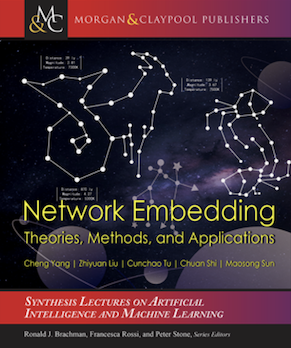

|  |
Network Embedding: Theories, Methods, and Applications
Authors: Cheng Yang, Zhiyuan Liu, Cunchao Tu, Chuan Shi, Maosong Sun
Synthesis Lectures on Artificial Intelligence and Machine Learning, Morgan and Claypool Publishers, March 2021. 242 pages.
Links: [Publisher]
Welcome comments and suggestions: liuzy@tsinghua.edu.cn
|
Abstract
Many machine learning algorithms require real-valued feature vectors of data instances as inputs. By projecting data into vector spaces, representation learning techniques have achieved promising performance in many areas such as computer vision and natural language processing. There is also a need to learn representations for discrete relational data, namely networks or graphs. Network Embedding (NE) aims at learning vector representations for each node or vertex in a network to encode the topologic structure. Due to its convincing performance and efficiency, NE has been widely applied in many network applications such as node classification and link prediction.
This book provides a comprehensive introduction to the basic concepts, models, and applications of network representation learning (NRL). The book starts with an introduction to the background and rising of network embeddings as a general overview for readers. Then it introduces the development of NE techniques by presenting several representative methods on general graphs, as well as a unified NE framework based on matrix factorization. Afterward, it presents the variants of NE with additional information: NE for graphs with node attributes/contents/labels; and the variants with different characteristics: NE for community-structured/large-scale/heterogeneous graphs. Further, the book introduces different applications of NE such as recommendation and information diffusion prediction. Finally, the book concludes the methods and applications and looks forward to the future directions.
Authors
- Cheng Yang is an assistant professor in the School of Computer Science, Beijing University of Posts and Telecommunications, China. He received his B.E. and Ph.D. degrees in Computer Science from Tsinghua University in 2014 and 2019, respectively. His research interests include network representation learning, social computing, and natural language processing. He has published more than 20 papers in top-tier conferences and journals including AAAI, ACL, ACM TOIS, and IEEE TKDE.
- Zhiyuan Liu is an associate professor in the Department of Computer Science and Technology, Tsinghua University, China. He got his B.E. in 2006 and his Ph.D. in 2011 from the Depart ment of Computer Science and Technology, Tsinghua University. His research interests are natural language processing and social computation. He has published over 60 papers in international journals and conferences, including IJCAI, AAAI, ACL, and EMNLP, and received more than 10,000 citations according to Google Scholar.
- Cunchao Tu is a postdoc in the Department of Computer Science and Technology, Tsinghua University. He got his B.E. and Ph.D. in 2013 and 2018 from the Department of Computer Science and Technology, Tsinghua University. His research interests include network represen tation learning, social computing, and legal intelligence. He has published over 20 papers in international journals and conferences including IEEE TKDE, AAAI, ACL, and EMNLP.
- Chuan Shi is a professor in the School of Computer Sciences of Beijing University of Posts and Telecommunications. His main research interests include data mining, machine learning, and big data analysis. He has published more than 100 refereed papers, including top journals and conferences in data mining, such as IEEE TKDE, ACM TIST, KDD, WWW, AAAI, and IJCAI.
- Maosong Sun is a professor of the Department of Computer Science and Technology, and the Executive Vice President of Institute of Artificial Intelligence at Tsinghua University. His research interests include natural language processing, internet intelligence, machine learning, social computing, and computational education. He was elected as a foreign member of the Academia Europaea in 2020. He has published more than 200 papers in top-tier conferences and journals and received more than 15,000 citations according to Google Scholar.
Table of Contents
Part I: Introduction to Network Embedding
- The Basics of Network Embedding
- Network Embedding for General Graphs
Part II: Network Embedding with Additional Information
- Network Embedding for Graphs with Node Attributes
- Revisiting Attributed Network Embedding: A GCN-Based Perspective
- Network Embedding for Graphs with Node Contents
- Network Embedding for Graphs with Node Labels
Part III: Network Embedding with Different Characteristics
- Network Embedding for Community-Structured Graphs
- Network Embedding for Large-Scale Graphs
- Network Embedding for Heterogeneous Graphs
Part IV: Network Embedding Applications
- Network Embedding for Social Relation Extraction
- Network Embedding for Recommendation Systems on LBSNs
- Network Embedding for Information Diffusion Prediction
Part V: Outlook for Network Embedding
- Future Directions of Network Embedding
Last update: April 13, 2021.